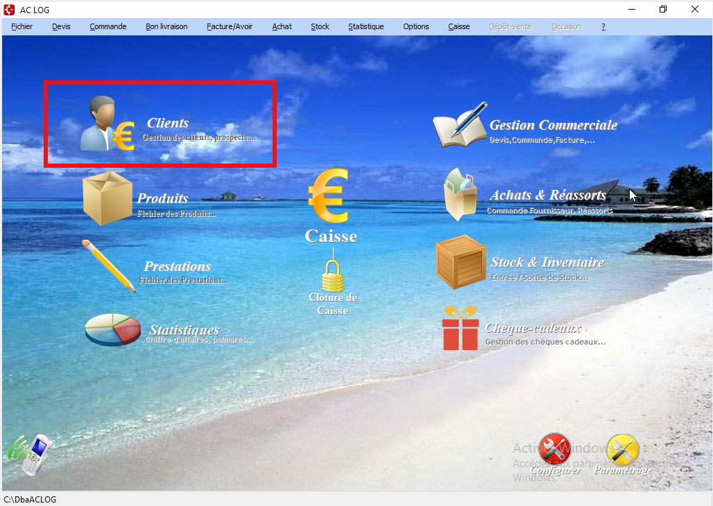
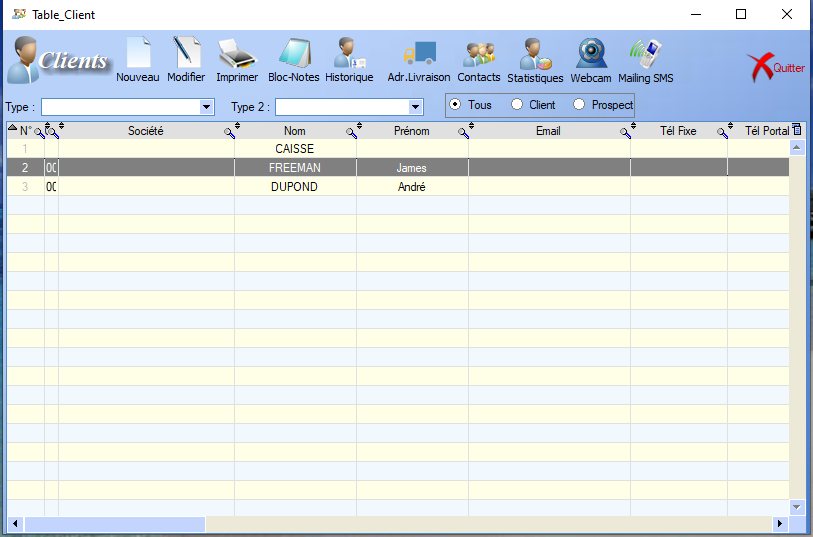
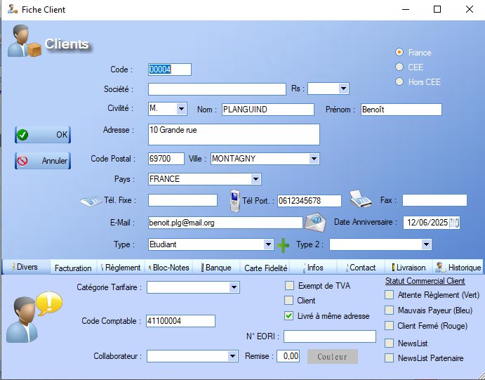
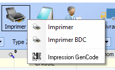
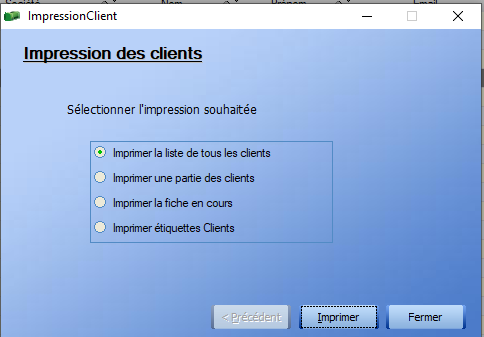
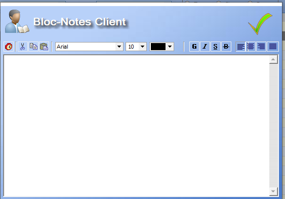
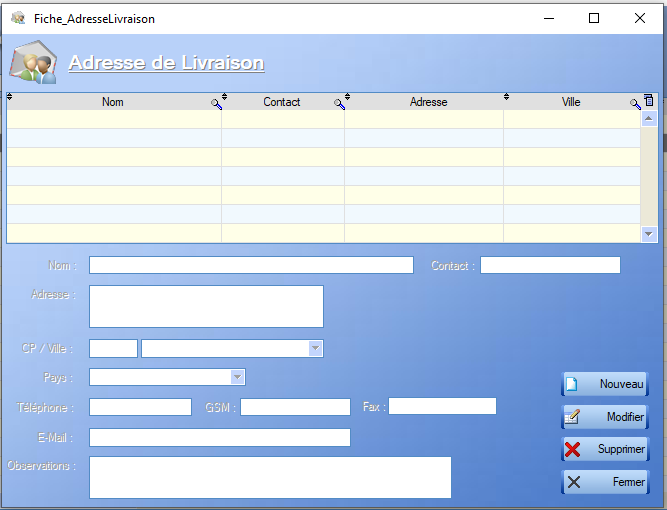
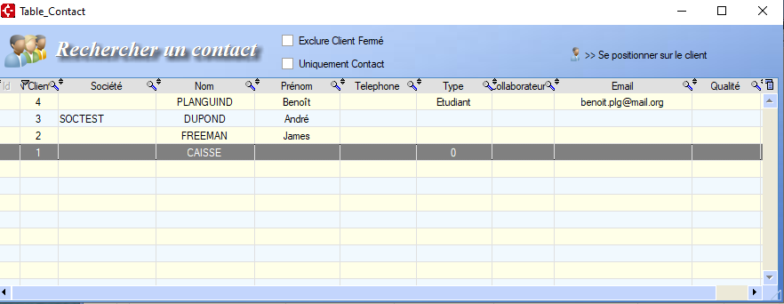
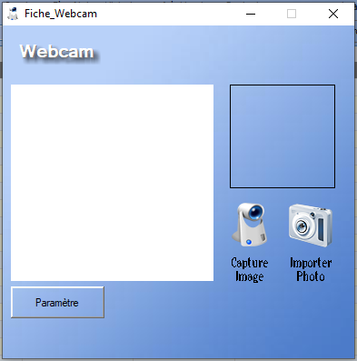
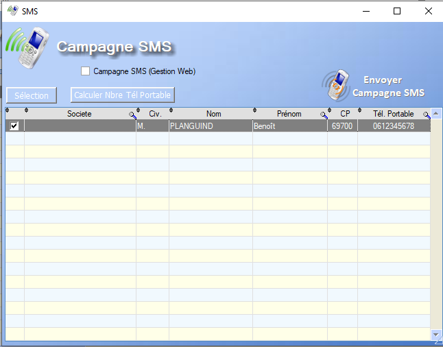

Clients
Cette section présente et explique le fonctionnement ainsi que les différentes fonctionnalités de l'outil de gestion des clients accessibles depuis le menu de base via ce bouton : 
Liste des clients
A l'ouverture, le menu clients affiche un tableau listant les différents clients déjà enregistrés ainsi que leurs différentes caractéristiques.

La page ainsi ouverte donne accès à une liste de fonctionnalités plus ou moins complexes :
- Nouveau
- Modifier
- Imprimer
- Bloc-Notes
- Historique
- Adresse de livraison
- Contacts
- Statistiques
- Webcam
- Mailing SMS
Un double-clic sur un des clients donne accès à sa Fiche Client.
De plus, un clic-droit sur un des clients listés permet d'interagir avec le dit client. Certaines de ces interactions sont communes au menu de base, mais quelques-unes d'entres elles sont disponibles uniquement via ce biais :
Le menu est également muni de quelques filtres, situés au dessus du tableau :

Les deux premiers filtres influencent sur les types des clients et le dernier sur son statut.
Fiche Client
La fiche client présente toutes les caracéristiques définies lors de la création du client en premier plan.

En bas de l'interface, un certain nombre d'onglets s'offent à nous :
- Les onglets Règlement ainsi que Banque permettent la définition des préférences de paiement du client.
- L'onglet Divers permet de gérer des caractéristiques plus précises liées au client :

- L'onglet Facturation permet de rentrer les informations utiles dans le cat où le client représenté une société.
- L'onglet Livraison permet l'ajout d'informations relatives aux potentiels bons de livraison
- L'onglet Carte fidélité permet d'activer une carte de fidélité liée au client :

- L'onglet Infos n'offre pas d'interaction mais donne accès au chiffres d'affaire généré par ce client.
- L'onglet Historique donne accès à toutes les ventes/commandes impliquant le dit client.
- L'onglet Bloc-Notes joue le rôle de post-it et mermet d'ajouter une annotation quelconque à la fiche.
- Enfin, l'onglet Contact liste les différents moyens de contacts du client et permet d'en ajouter.
Modifier
L'outil de modificiation ouvre simplement la fiche client. L'utilisateur peut alors modifier tous les champs modifiables et ajouter de potentielles informations manquantes.
Imprimer
Il existe trois types d'impression.

Imprimer
Un clic sur le bouton Imprimer nous donne accès à quatre options:

- Imprimer la liste de tous les clients :
Imprime le résumé de la fiche de chaque client, une par page
- Imprimer une partie des clients
Filtre les clients à imprimer en fonction de leur nom et du nom de leur société
- Imprimer la fiche en cours
Permet l'impression de la fiche client ou des chiffres annules du client sélectionné
- Imprimer étiquettes clients
A compléter
Imprimer BDC
Un clic sur le bouton Imprimer BDC nous permet de choisir les dates de départ et de fin du bon de commande associé à un client et d'imprimer ce dernier si il existe.
Imprimer GenCode
A completer
Bloc-Notes
L'outil Bloc-Notes donne directement accès au bloc-notes de la Fiche Client.

Historique
Le bouton historique donne accès à un menu déroulant permettant de choisir le sujet de l'historique, celui-ci prenant en compte tous les clients définis.
Ouvre l'historique de toutes les ventes/prestations effectuées pendant une période choisie par l'utilisateur
-
Historique des Commandes
-
Historique des BDL
-
Historique des Cheque-cadeaux
-
Historique des Abonnements
Adresse de Livraison
Ce bouton ouvre un menu permettant de Créer/modifier/supprimer des coordonées de livraisons indépendamments des clients, réliées à ceux-ci par leur nom :

Contacts
Ce menu permet d'accéder rapidement aux moyens de contacts associés à tous les clients.

Pour ajouter un contact relié à un client, il faut passer par l'onglet contact de sa Fiche Client.
Webcam
Permet l'ajout d'une photo, via la webcam ou un import, associée à un client.

Mailing SMS
Permet le lancement d'une campagne SMS pour les clients possèdant un numéro de téléphone enregistré.

Supprimer
Le clic-droit sur un client nous propose entre autre de le supprimer. Un avertissement apparaît. En effet, un client peut être impliqué dans un ou plusieurs processus en cours, tels qu'une facturation ou une livraison, et sa suppression peut entraîner des disfonctonnements vis à vis de ces processus. Il est donc nécessaire de s'assurer que chaque processus impliquant ce client est terminé avant de le supprimer.